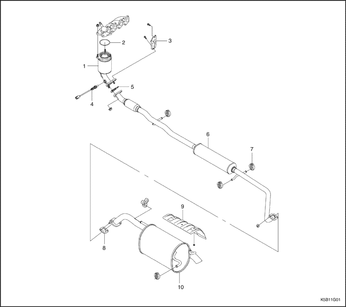
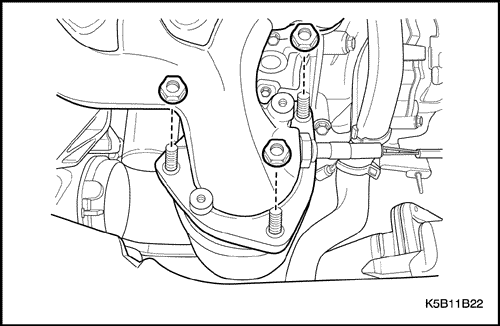
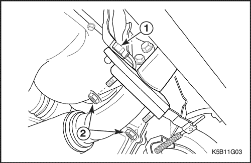
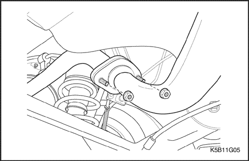
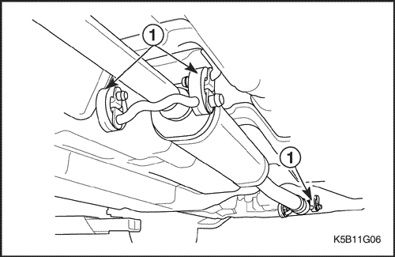
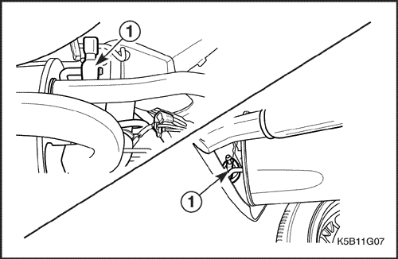

SECCIÓN 1G
ESCAPE DEL MOTOR
ESPECIFICACIONES
Especificaciones de apriete de la sujeción
Aplicación | N•m | Lb-pie | Lb-pulg. |
Tuercas de unión del tubo de escape delantero al Convertidor catalítico de minioxidación. | 25 - 35 | 18 - 25 | - |
Tuercas que unen el silenciador delantero-al-silenciador trasero | 25 - 35 | 18 - 25 | - |
Tornillo que une el convertidor catalítico de minioxidación al colector de escape | 35 - 45 | 26 - 33 | - |
Tornillo del soporte inferior del convertidor catalítico | 25 - 35 | 18 - 25 | - |
Escudo térmico del silenciador trasero | 8 - 12 | - | 71 - 106 |
LOCALIZACIÓN DE COMPONENTES
Sistema de escape (0.8L/1.0L)



- Convertidor de minioxidación (convertidor catalítico)
- Junta
- Soporte
- O2S (sensor de oxígeno) - Sólo 1.0L
- Junta
- Silenciador delantero
- Fijación del silenciador
- Junta
- Escudo térmico
- Silenciador trasero
MANTENIMIENTO Y REPARACIÓN
SERVICIO EN EL VEHÍCULO

Convertidor catalítico
Precaución: Asegúrese de que los componentes están fríos. Realice el trabajo.
Procedimiento de desmontaje
- Desmonte el conjunto de filtro del aire. Consulte la Sección 1B1, "Mecánica del motor SOHC".
- Desenchufe el conector del sensor de oxígeno.
- Quite las tuercas del convertidor catalítico.

- Quite los tornillos y las tuercas del soporte inferior del convertidor catalítico.
- Quite el tornillo del soporte (1).
- Quite las tuercas (2).
- Desmonte el convertidor catalítico junto con la junta.
- Compruebe si la junta tiene fugas o está dañada.
Procedimiento de montaje
- Para el montaje, repita en orden inverso el procedimiento de desmontaje.
- Monte el convertidor catalítico en el silenciador delantero.
- Coloque el soporte y las tuercas.
Apretar
- Apriete el tornillo del soporte (a) hasta 25-35 N•m (18-25 lb-pie).
- Apriete las tuercas (b) hasta 25-35 N•m (18-25 lb-pie).
- Monte el convertidor catalítico en el colector de escape.
Apretar
Apriete las tuercas hasta 35-45 N•m (26-33 lb-pie).

Silenciador delantero
Procedimiento de desmontaje
- Desmonte el convertidor catalítico. Consulte el apartado "Convertidor catalítico" de esta sección.
- Quite las tuercas que unen el silenciador delantero al silenciador trasero.

- Separe el silenciador delantero del suspensor de goma (1).
- Desmonte el silenciador delantero.
Procedimiento de montaje
- Para el montaje, repita en orden inverso el procedimiento de desmontaje.
- Cuelque el silenciador delantero en el suspensor de goma (1).
- Coloque las tuercas que unen el silenciador delantero y el trasero.
Apretar
Apriete las tuercas hasta 25-35 N•m (18-25 lb-pie).
Silenciador trasero
Procedimiento de desmontaje
- Quite las tuercas que unen el silenciador delantero al silenciador trasero.

- Separe el silenciador trasero del suspensor de goma (1).
- Desmonte el silenciador trasero.
Procedimiento de montaje
- Para el montaje, repita en orden inverso el procedimiento de desmontaje.
- Cuelgue el silenciador trasero del suspensor de goma.
- Coloque las tuercas que unen el silenciador delantero y el trasero.
DESCRIPCIÓN GENERAL Y FUNCIONAMIENTO DEL SISTEMA
Sistema de escape
Aviso: Cuando esté comprobando o sustituyendo los componentes del sistema de escape, asegúrese de que haya holgura suficiente en todos los puntos de los bajos de la carrocería para evitar el calentamiento excesivo de la chapa del piso y posibles daños al aislamiento y a los materiales de guarnecido del habitáculo.
Compruebe si en el sistema de escape completo y zonas adyacentes a la carrocería y capó del maletero hay piezas rotas, dañadas, mal montadas o que falten, así como soldaduras abiertas, agujeros, conexiones flojas o cualquier otro tipo de deterioro que pudiera permitir la entrada de los gases de escape al interior del compartimento de pasajeros o del maletero. La presencia de agua o polvo en el maletero puede ser señal de que hay algún problema en uno de estos puntos. Cualquier defecto existente debe ser corregido de inmediato.
Silenciador
El silenciador reduce la temperatura, presión y ruido de los gases de escape.
Aparte de la conexión del colector de escape, el sistema de escape emplea un sistema de brida y junta contrapuesto al diseño de acoplamiento deslizante. Si durante la inspección del conjunto del tubo de escape y silenciador delantero se descubren agujeros, soldaduras abiertas o cualquier otro deterioro, debe sustituirse el conjunto completo. Lo mismo es válido para el conjunto del silenciador trasero.
Los escudos térmicos en sus posiciones delantera y trasera del conjunto silenciador, así como el convertidor catalítico y el tubo de escape delantero, protegen al vehículo y al medio ambiente de las altas temperaturas generadas por el sistema de escape.
Convertidor catalítico
Aviso: Cuando levante el vehículo con un gato o cualquier otro medio de elevación por los largueros de la carrocería, asegúrese de que las pastillas de elevación no entren en contacto con el convertidor catalítico, ya que esto podría ocasionarle daños al mismo.
Aviso: El convertidor catalítico requiere el uso exclusivo de combustible sin plomo o, de lo contrario, resultará dañado.
El convertidor catalítico es un dispositivo de control de las emisiones que se añade al sistema de escape para reducir los contaminantes de los gases de escape.
El catalizador de oxidación está recubierto de un material catalítico que contiene platino y paladio, y que reduce los niveles de hidrocarburos (HC) y de monóxido de carbono (CO) de los gases de escape. El catalizador de tres- vías dispone de un recubrimiento que contiene platino y rodio, el cual reduce, adicionalmente, los niveles de óxido de nitrógeno (NOx).